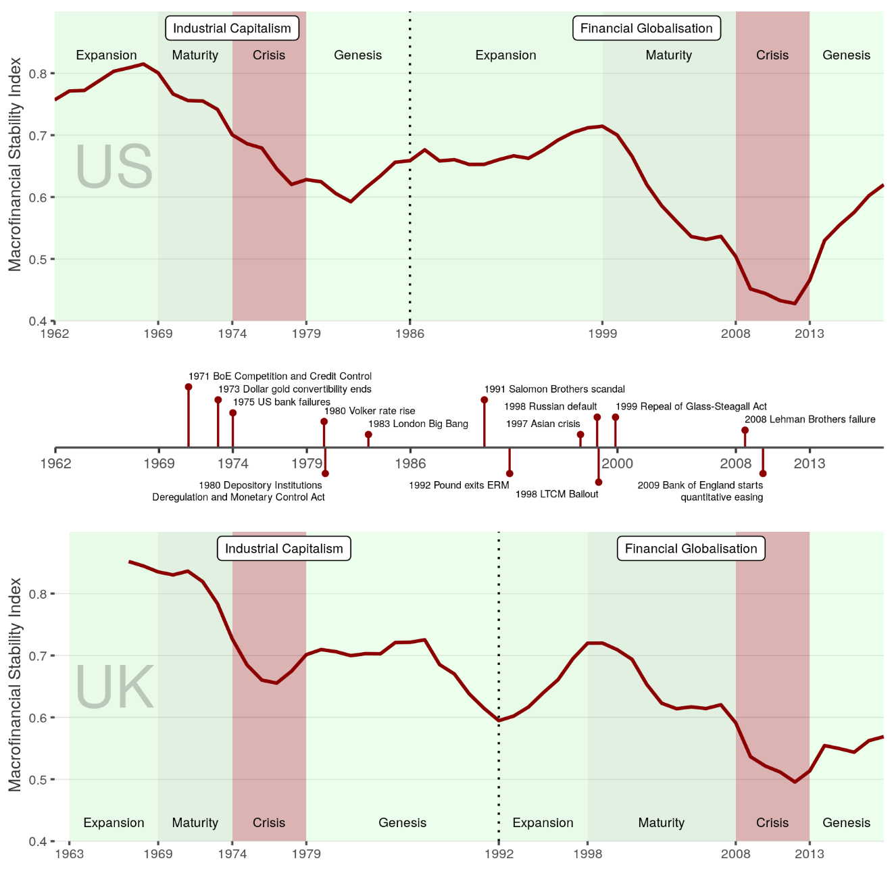

24 Macro-Finance
The ultimate driver of government financing costs is the central bank.
24.1 Institutional Supercycles
Dafermos
Supercycle
We build upon the Minskyan concepts of ‘thwarting mechanisms’ and ‘supercycles’ to develop a framework for the analysis of the dynamic evolutionary interactions between macrofinancial, institutional and political processes.
Thwarting mechanisms are institutional structures that aim to stabilise the macrofinancial system. The effectiveness of such structures changes over time, creating a secular cyclical pattern in capitalism: the supercycle.
We develop a macrofinancial stability index and identify two supercycles in the post-war period, which we label the industrial and financial globalisation supercycle respectively.
For each, we apply a four-phase classification system, based on the effectiveness of institutions, customs and political structures for stabilising the macrofinancial system.
The supercycles framework can be used to explain and anticipate macroeconomic, financial and thus political developments, and moves beyond conventional approaches in which such developments are treated as exogenous shocks.
Framework
Despite the bidirectional and dynamic nature of the interactions between institutions and macrofinancial processes, analysis is often partial and static. In the political economy literature, institutional change is linked with exogenous macroeconomic or financial shocks, such as shifts in inflation or the policy interest rate (Iversen and Soskice, 2012; Gabor and Ban, 2013). Conversely, macrofinancial developments are explained as arising from exogenous institutional change, such as alterations to financial regulation or labour market legislation. A framework in which institutional change and macrofinancial processes are dynamically interlinked is still missing.
In this paper, we develop an evolutionary framework that connects macrofinancial processes and institutional change. The foundations of this framework lie with two largely overlooked concepts in Minsky’s analysis of financial capitalism (Palley, 2011). The first is that of ‘thwarting mechanisms.’ This concept draws on Minsky’s insight that, although capitalism is inherently unstable, this instability rarely becomes explosive because of the existence of ‘customs, institutions or policy interventions’ that tame destabilising forces (Ferri and Minsky, 1992, p. 84). Thwarting mechanisms counteract the inherent instability of capitalism, allowing for long periods of high economic activity and social and financial stability. However, the effectiveness of thwarting mechanisms varies over time, eventually diminishing as a result of the profit-seeking actions of economic agents and the generation of new sources of long-run instability. This endogenous erosion gives rise to crises, which, in turn, lead to the development of new thwarting mechanisms. The rise and fall of thwarting mechanisms generates secular cycles in macrofinancial stability. This ‘supercycle’ is the second concept we borrow from Minsky and Palley.
Thwarting Mechanisms
Minsky’s concept of thwarting mechanisms: ‘customs, institutions or policy interventions that make observed values of macroeconomic variables different from what they would have been if each economic agent pursued “only his own gain”’.
Thwarting mechanisms reduce the amplitude of basic cycles, constraining instability by imposing ceilings and floors on the dynamic path of the economic system.
Floor mechanisms aim to ensure a minimum level of aggregate demand, thereby placing a floor under the level of economic activity. These mechanisms may be the result of deliberate policy interventions, (e.g. activist fiscal policy), or a side effect of other developments (e.g. expansion of household debt to maintain consumption spending).
Ceiling mechanisms aim to impose upper limits on the economic expansion by restricting activities that may enhance growth but also generate instability. Examples of ceiling mechanisms include inflation targeting, financial regulation aimed at reducing procyclicality and leverage, and capital controls to restrict speculative financial inflows.
The supercycle is a long-run institutional and political cycle over which the effectiveness of a particular configuration of thwarting mechanisms first increases and then declines. The configuration of thwarting mechanisms shapes the supercycle, hardwiring powerful macroeconomic ideas into policy regimes.
Macrofinancial stability is primarily driven by the effectiveness of thwarting mechanisms.
Four Phases
Four phases of the supercycle: expansion, maturity, crisis and genesis.
During the expansion phase, newly introduced thwarting mechanisms are effective, leading to economic expansion and broad social and financial stability: economic and financial activity is disrupted by the recessions of the basic cycles, but thwarting mechanisms prevent a systemic crisis. Economic agents learn how to adapt to the new institutional environment, however, innovating to preserve or increase their profits and thereby reducing the effectiveness of thwarting mechanisms. Further, mechanisms introduced to reduce one source of instability may over time create others, potentially as a result of interaction with other thwarting mechanisms.
Once the effectiveness of thwarting mechanisms starts to decline, the cycle enters the maturity phase, during which economic expansion continues but the macrofinancial stability of the system is diminishing.
The declining effectiveness of thwarting mechanisms ultimately leads to crisis, because the institutional framework is no longer sufficient to constrain the dynamics of the basic cycle. At this point, a basic-cycle recession leads to deep economic, political and social instability, and institutional restructuring. While government intervention may stabilise the economy, broad-based recovery is impossible because existing thwarting mechanisms are ineffective: the institutional structure is can no longer ensure macrofinancial stability.
The ensuing genesis phase sees attempts to establish a new configuration of thwarting mechanisms, attempts shaped by political struggles. When – or if – effective new mechanisms are introduced, the next supercycle begins. In the case that – for political, social or technological reasons – such mechanisms cannot be introduced, the crisis phase will be prolonged, likely accompanied by political and social turmoil.
Institutional Change
Institutions, understood as ‘rules of the game’ provide mechanisms to facilitate market exchange in the presence of transactions costs that prevent an optimal frictionless equilibrium.
Causation is largely unidirectional: given the presence of transactions costs, exogenously imposed ‘good’ institutions – usually understood as the rule of law, secure property rights, well-developed financial markets etc. – produce good economic outcomes. Changes in institutional structure, understood as formal ‘rules of the game’ result from ongoing optimisation by market participants over the costs of reconfiguration relative to the benefits, given incomplete information sets, technology, and firm-specific knowledge.
Recent work goes beyond this micro-based analysis to examine the possibility of emergent properties in complex evolutionary systems, using agent-based modelling techniques. Thwarting mechanisms can be viewed as constraining the macrofinancial instability that arises from the emergent properties of such complex systems.
Institutional structure itself, understood as the configuration of thwarting mechanisms, emerges and evolves as a result of the profit-seeking behaviour of agents. The agent-driven erosion of thwarting mechanisms can give rise to macrofinancial instability.
The distribution of power influences the design of thwarting mechanisms; it does not merely affect macroeconomic targets and the associated policy design. Policy makers need to establish mechanisms that keep a range of key macroeconomic variables within certain bounds, irrespective of the primary macroeconomic target; otherwise, macroeconomic instability would undermine political stability.
The way that thwarting mechanisms are eroded is specific to each supercycle: the strength of labour in the 1970s undermined the wage-price consensus, giving rise to inflationary pressure, while the strength of finance in the 2000s placed limits on the effectiveness of mechanisms to constrain financial instability.
Macrofinancial Stability Index (MSI)
The MSI is constructed using a number of ‘floor’, ‘ceiling’ and ‘corridor’ macroeconomic and financial variables.
The MSI is calculated as one minus an average of the normalised distances of floor, ceiling and corridor variables from their maximum, minimum and average values respectively (over the period under investigation. The MSI thus takes values between 0 (minimum stability) and 1 (maximum stability).

High-income countries experienced common secular cyclical movements in their macrofinancial stability in the post-World War II period.
The ideological shift on macroeconomic management at the end of the 1970s brought independent central banks oriented to inflation targeting and fiscal deficits financed on sovereign debt markets. Mass privatisation reduced the state’s economic footprint, while previous gains on employment protection and unemployment benefits were substantially rolled back. Growth increasingly relied on rapid expansion of leverage and increasing financial activity. The financial sector, in turn, found that new institutional structures were required to enable leverage to expand beyond traditional constraints. During the expansionary phase of the FG supercycle, shadow banking expanded significantly, absorbing the flow of assets resulting from the continued expansion of credit. Securitisation and the originate-to-distribute model allowed banks to transform illiquid assets, mortgage loans in particular, into marketable securities. These securities were financed with short-term liabilities such as repos and asset-backed commercial paper (ABCP). Growth became increasingly reliant on collateral-based financial activity.
Collateral plays a central role in funding neorentier balance sheets. Neorentiers issue short-term (often overnight) repo deposits secured by tradable collateral. For lenders such as institutional cash pools or money market funds, collateral makes repos a better liquidity management vehicle than unsecured bank deposits. Repo borrowing allows a wide range of institutions to access money market funding, while rising asset prices lead to increasing leverage capacity because repo collateral is marked to market. The use of collateral functionally, and imperfectly, replaces direct sovereign guarantees on short-term liquid assets.
The rise of collateral-based finance fundamentally changed the relationships between central banks and governments. In the 1990s, central banks in high-income countries collectively sanctioned neorentiers’ turn to shadow deposits by liberalising repo markets, often to enable Ministries of Finance to develop liquid government bond markets. States turned to neorentiers in the age of independent central banks and capital market financing of budget deficits, introducing reforms in sovereign bond markets designed according to neorentier preferences: regular auctions facilitated by primary dealers and deregulated repo markets
The promise of liquidity for sovereign bonds entrenches the ‘infrastructural power’ of finance: neorentiers promise liquidity to Ministries of Finance, and well-functioning monetary transmission mechanisms to central banks, improving their ability to oppose policy innovations or tighter regulatory measures. The rising power of neorentiers thus serves to discipline states, curbing fiscal and regulatory thwarting mechanisms: market financing of fiscal deficits privileges neorentiers as mediators between the monetary and the fiscal arms of the state, and creates conflicting objectives for the central bank and the Treasury.
Easy credit conditions allowed sustained expansion of private debt, enabling aggregate demand to keep up with productive capacity in the face of weak income growth and government retrenchment. Credit-financed consumption took over from capital investment as the driver of growth.
While crisis-era innovations succeeded in preventing financial system collapse and depression, growth has not returned. In our framework, this less due to ‘secular stagnation’ than to the institutional architecture of the FG supercycle – weak and ‘flexible’ labour, high inequality and government retrenchment. Without a change in this architecture – without a new set of thwarting mechanisms – it is difficult to identify a likely source of sustained demand growth other than a return to credit expansion.
Overall, while institutional changes improved the effectiveness of stabilising mechanisms in the period prior to the coronavirus pandemic, the continuous push for asset-based welfare reinforced the structural drivers of neorentier capitalism without delivering a new engine of growth. When the coronavirus crisis struck, a new configuration of thwarting mechanisms that could foster economic expansion alongside financial stability had not yet emerged. The thwarting mechanisms of the next supercycle will be, at least in part, the result of the rapid institutional change that has taken place as a result of this crisis, and of greater awareness of the potential for future pandemics. Inevitably, the next supercycle will also be conditioned by the even greater crisis of climate change.
Green Supercycle
What is most urgently required, in light of the COVID-19 and climate crises, is a detailed understanding of the current genesis phase and the prospects for the emergence of a new set of thwarting mechanisms that would underpin a green supercycle.
24.2 Central Banking
Braun
The impact of international economic integration on social protection is conditional on the monetary regime.
The role of the European Central Bank (ECB) as the supranational enforcer of the economic logic of integration since monetary union.
While Polanyi conceptualized central banking as an institution of non-market coordination that evolved to protect the domestic economy from gold standard pressures, the ECB has acted as an enforcer of disembedding “euro standard” pressures vis-à-vis national labor market and welfare state institutions.
Despite lacking the mandate or the authority to override national legislation, the ECB, strategically pursuing its organizational and systemic interests, pushed for structural reforms via discursive advocacy and conditionality. Our results show that Europe’s prospects for Polanyian non-market coordination are determined by Frankfurt as much as by Luxembourg and Brussels.
The death of ‘Social Europe’
The European Commission’s slogan of “a Europe that protects”, introduced in 2019, subtly diverges from the Treaty of Rome’s commitment to “proper social protection.” This is no accident. The euro area debt crisis accelerated labor market deregulation and welfare state retrenchment, and the idea of a “Social Europe” has been declared “dead.” At the same time, and particularly among those most affected by by these developments, protectionist and nationalist sentiments have been on the rise. Brussels watchers have read “a Europe that protects” as a bellwether of a new, non-liberal politics of protection.
The European Union (EU) as a unique case combining high levels of protection with full “globalization in the strict sense of the word”, namely unrestricted competition for capital, goods and services.
The strictures of the euro considerably amplified the economic logic of integration relative to the legal and political logics expressed through the ECJ and the Commission, respectively. With the introduction of the euro in 1999, this economic logic of integration found its institutional expression in the European Central Bank (ECB). Since then, the relationship between economic integration and social protection has been shaped in Frankfurt as much as in Brussels and Luxembourg.
Structural Reforms
The ECB defined structural reforms, in strikingly Polanyian terms, as policies that “change the fabric of an economy, the institutional and regulatory framework in which businesses and people operate.”
This advocacy constitutes a puzzle: The ECB lacks both a mandate and the legal means to shape labor market and social policies at the member-state level. Pushing to “change the fabric” of societies therefore entails significant reputational risks. Why, then, did the ECB chose to push for structural reforms? Our explanatory framework places the emphasis on the ECB’s organizational (credibility and legitimacy) and systemic (survival of the euro) interests. In pursuing those interests, the ECB strategically adjusted the method and content of its structural reform advocacy to fit the economic and political context. In the wake of the euro area debt crisis, the ECB acquired the power—shared with the Commission and the International Monetary Fund (IMF)—to impose and enforce policy conditionality.
Polanyi
Our analysis, while drawing on Polanyi, fills an important gap in Polanyian thinking on the political economy of central banking. According to Polanyi, national central bank- ing evolved as an expression of the countermovement to the commodification of money under the international gold standard. Whereas Polanyi said little about potential con- flicts between non-market coordination in the domain of money (central banks) and social protection in the domain of labor (social policies and trade unions), this conflict subse- quently moved to the very center of macroeconomic governance. A large literature has since studied the interaction between national central banks and national labor market policies and wage-setting actors.
The institutional setting of this interaction changed dramatically with EMU, which established a supranational monetary regime with its own supranational central bank. From the beginning, heterogeneous labor market in- stitutions and social policies threatened divergent national inflation developments, which clashed with the ECB’s one-size-fits-all monetary policy.
Whereas Polanyi would have expected a central bank to protect national economies from the disembedding pressures of the monetary regime, the ECB has instead embodied these very pressures, acting as a—if not the—key planner of laissez-faire in national labor markets.
Looking beyond Europe, our analysis contributes to the literature on policy diffusion in the context of economic globalization. Here, national policymakers routinely encounter the problems of translating and enforcing perceived functional pressures emanating from the international level.
The IMF, guided by the “Washington Consensus,” made its emergency lending conditional on gov- ernments’ implementing specific structural reforms, playing the role of both translator and enforcer.
Central banks, as the ultimate repositories of “epistemic authority” on economic matters, are uniquely positioned to play a similar role at the domestic level. In the euro area, the role of translator and—to a lesser but significant extent—enforcer of perceived functional pressures was assumed by the ECB ECB identified—and sought to counter via structural reforms and public-sector wage restraint—the diverging trend in unit labor costs as early as 2005, years before the European Commission.
The ECB has been a highly articulate proponent of specific structural reforms in national labor markets and social policy regimes. When unit labor cost divergence, first recognized and prioritized by Trichet, threatened the very effectiveness of supranational monetary policy, the ECB began to pro- mote structural reforms as means of macroeconomic adjustment, both in public speeches and behind the scenes with national policymakers. Executive Board members urged gov- ernments to seek downward wage adjustments, both via structural labor market reforms and by imposing wage restraint on the public sector. When the euro-area debt crisis hit, the ground for its interpretation as a crisis of competitiveness divergence had already been prepared by the ECB. When circumstances added formal and informal conditionality to the ECB’s toolkit, it wielded those instruments to help enforce labor market liberalization, internal devaluation, and public sector wage cuts. It was only when deflationary pressures and criticism in the European Parliament and elsewhere threatened its legitimacy that the ECB abandoned its advocacy of structural reforms.
Despite lacking both a mandate and the legal means to directly override national regulations, the ECB has been a keen supranational advocate of market-enhancing integration in the field of labor market and social policy.
This analysis also sheds new light on the broader political economy of central banking. Polanyi and others have shown that national central banking evolved under the interna- tional gold standard to buffer the disruptive adjustment pressures on national economies. The supranational ECB provided such protection for the financial system, but not for labor. Instead, emulating the role the IMF in other parts of the world, the ECB trans- lated—and subsequently helped to enforce—the perceived functional pressures of interna- tional monetary and financial integration. Whether the ECB is constitutionally wedded to the role of “prime mover in the move to a market society” remains to be seen. 135 Its recent shift from structural reform advocacy to calls for wage increases has been echoed in the US, where the Federal Reserve has signaled that it will prioritize employment and wage growth over consumer and asset price stabilization. Central banks may yet again become “active agents of the countermovement.”
Braun (2021) Planning Laissez-faire: Supranational Central Banking (pdf)
24.2.1 ECB - Implosion?
Gabor
Under the financial capitalism supercycle of the past decades, inflation-targeting central banks have been outposts of (financial) capital in the state, guardians of a distributional status-quo that destroyed workers’ collective power while building safety nets for shadow banking. The limits of this institutional arrangement that concentrates (pricing) power and profit in (a few) corporate hands are now plain to see. ….. What if Zugzwang is that last stage of a central banking paradigm, when it implodes under the contradictions of its class politics?
In turning European states into a collateral factory for private finance, the founding fathers did not consider the financial stability implications for the ECB.
The eurozone’s macro-financial architecture is wired to amplify volatility in sovereign spreads to the German Bund, via the €9tn repo market. This wholesale money market provides the plumbing for private credit creation, both on bank balance sheets and through securities markets. It was designed — by the ECB and the European Commission — to mainly rely on eurozone sovereign bonds as repo collateral. Yet we know from the eurozone sovereign debt crisis that repo collateral valuation means cyclical market liquidity in eurozone sovereigns except Germany, threatening liquidity spirals that only the ECB can prevent. Liquidity spirals, it is worth remembering, or not just bad for eurozone governments, but also for private institutions that use those bonds as collateral.
Putin’s invasion of Ukraine, coupled with the reluctance of European governments to act decisively with energy price caps, have left the ECB as a convenient scapegoat. Scapegoating invariably turns dovish central bankers into hawks, particularly when their peers elsewhere act as obedient vassals to the dollar hegemon. Indeed, monetary historians will marvel at that brief period when European politicians believed so much in the euro’s potential to unseat the US dollar … With that illusion behind us and the euro below parity, the ECB is just another central bank trapped in the global dollar financial cycle, prey to facile comparisons with other central bank interest rates.
“If the climate and geopolitical (shocks, sic) of 2022 are omens of Isabel Schnabel’s Great Volatility that most central banks and pundits expect for the near future, then macro-financial stability requires new framework for co-ordination between central banks and Treasuries that can support a state more willing to, and capable of, disciplining capital.”
Such a (new) framework would threaten the privileged position that central banks have had in the macro-financial architecture and in our macroeconomic models. The history of central banking teaches us that policy paradigms die when they cannot offer a useful framework for stabilising macroeconomic conditions, but never at the hands of central bankers themselves.